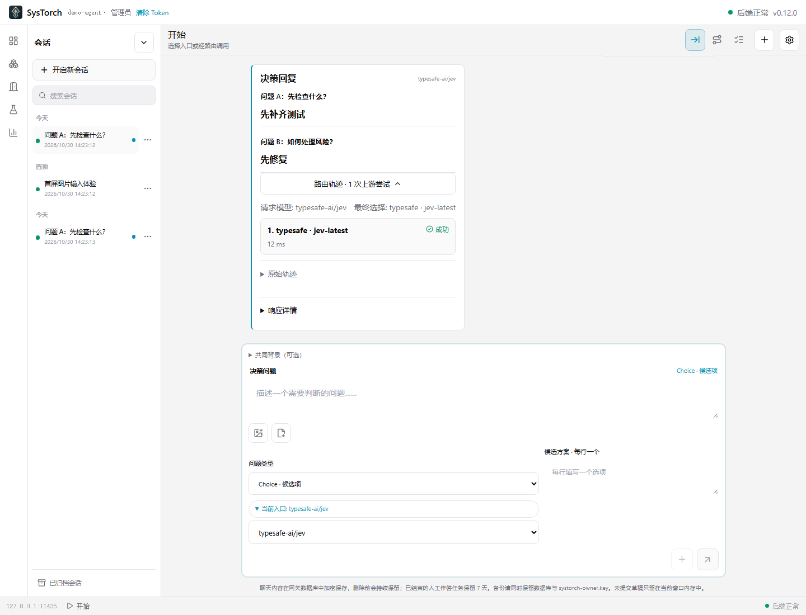
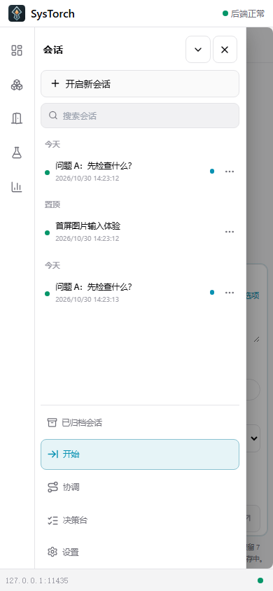

提交结构化问题
人、软件或 Agent 通过同一份契约提交情境与有序问题。
为 System One 决策而造
SysTorch 把结构化判断送入可检查的路由，在本地或托管决策服务间协调；需要时交给人作答，再把类型明确的结果交还原调用方。
面向 Jev / System One typed decisions不是通用聊天模型网关
一次结构化决策
示意图：调用方发送一个 Choice 问题；第一个上游返回限流错误，路由继续尝试第二个上游，成功得到类型化答案并交还调用方。
示意路径使用合成数据，不是实时流量或模型质量演示。
先看清它处理什么
请求携带情境与问题定义；决策服务返回可供软件检查和分支处理的类型化结果。
{
"state": { "ticket": "refund requested" },
"question_order": ["route"],
"questions": {
"route": {
"type": "choice",
"instructions": "Which team should handle this?",
"criteria": {
"billing": "Billing",
"support": "Support",
"review": "Manual review"
}
}
}
}图片、音频、视频和文件可按 SysTorch assets 契约登记；目标服务的实际支持可能不同。无法无损转换时明确报错，不静默改写格式。
一个决策，完整的一段路
一个父请求可以包含多个上游尝试。成功回复作为主要结果；失败与重试成为它的可追踪来路。
人、软件或 Agent 通过同一份契约提交情境与有序问题。
图组织入口、复用节点和提供商；真实调用让路径与连线辉光相呼应。
调用方收到 schema 可检查的答案，也能按需查看请求 ID、尝试顺序和最终赢家。
模型可以判断，应用保留控制；结果不会替应用执行动作或授予权限。
当前适配器：TypeSafe System One、Laya、Vercel、OpenRouter（上游转换）。每项能力仍取决于目标服务与模型。
需要人的时候，答案仍有归处
当任务明确需要人做决定，SysTorch 可把它保存为持久任务。人在决策台作答后，调用方可用原身份取回结构化结果。
查看提交—作答—取回指南放在生态里看
本地模型工作台、通用 Agent 网关、托管决策 API 都可以与 SysTorch 配合。SysTorch 的重点，是把 System One 请求、路由证据和人工作答连成可操作的生命周期。
System One 路由并非 SysTorch 独有能力；差异来自产品把哪一种工作流放在中心，而不是宣称邻近工具没有重叠功能。
一套运行时，多个工作面
「开始」给人快速发起决策；专业控制台编辑 DAG、追踪历史并管理服务；标记为可控且经用户授权的本地 provider 可以运行登记的启停命令，推理引擎仍由外部服务提供。


界面截图来自本地浏览器与合成数据，不是 Release 二进制的真机截图，也不代表上游模型输出或人工验收。
同一份决策契约
使用者、应用和 Harness 都通过 SysTorch API 提交 typed questions。请求顺序、入口身份和错误 ID 可核对；持久人工作答使用独立的权限与任务接口。
阅读 HTTP 契约{
"model": "typesafe-ai/jev",
"state": { "ticket": "refund requested" },
"question_order": ["route"],
"questions": {
"route": {
"type": "choice",
"instructions": "Which team should handle this?",
"criteria": {
"billing": "Billing",
"support": "Support",
"review": "Manual review"
}
}
}
}Synthetic request example · no API key included
当前发行版
下载对应平台的当前版本，或先从 README 与外部调用指南了解它的工作方式。
Windows EXE 未作 Authenticode 签名；Android 保留稳定签名和安装身份以支持覆盖升级。具体限制以对应版本发行说明为准。